𝕰𝖗𝖆𝖓 𝖄𝖊𝖌𝖊𝖗
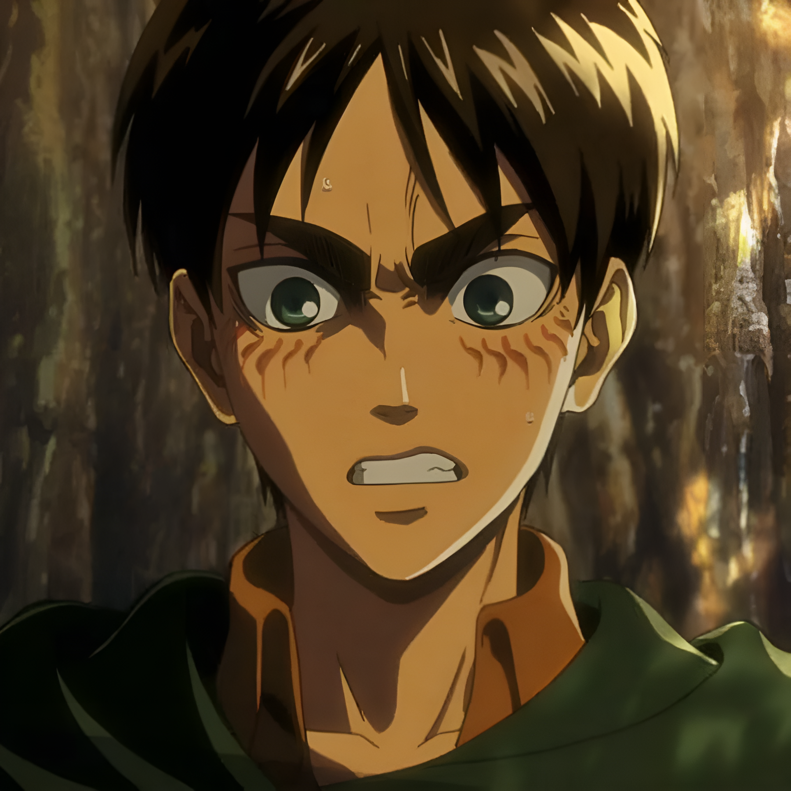 Эрен Йегер яп- エレン・イェーガ -
Протагонист истории (начиная с финальной арки — главный антагонист). Идеалистический и импульсивный, максималист, который стремится уничтожить гигантов и исследовать окружающий мир. Его философия: «Борьба — жизнь, проигрыш — смерть». В 9 лет спас Микасу, девочку, чью семью убили работорговцы. Занял лишь пятое место среди кадетов-выпускников своей группы, так как у него нет особых талантов в области боевых навыков, однако он компенсирует это большим усердием и целеустремлённостью. Во время битвы в Тросте обнаруживает у себя способность превращаться в 15-метрового гиганта. Вначале главный герой не мог полностью контролировать призванного титана, но после длительных тренировок получил широкий спектр способностей и абсолютный контроль. Когда великан не может больше функционировать, Эрен выходит из задней части шеи титана (слабое место каждого титана), где его тело сливается с позвоночником. Позже открывает в себе способность управлять гигантами, которую называют координатой. Его мать Карла погибла во время падения Сигансины, а его отец Гриша таинственным образом исчез, незадолго до этого оставив Эрену ключ от комнаты в подвале их дома, которую держал на замке и хранящую какой-то секрет.
После освобождения Сигансины в течение четырёх лет в тайне от элдийского правительства встречался с Еленой, от которой узнал о планах Зика Йегера по решению «элдийского вопроса» и после стал сотрудничать. В свою очередь Эрен сообщает Флоку Форстеру о своих намерениях использовать Зика, чтобы получить силу Основателя, и убить всех людей за пределами Парадиза. После этого Флок начинает тайно формировать повстанческую армию "Йегеристов". Перед окончанием войны на Ближнем Востоке, Эрен отрезает себе ногу и выколывает себе один глаз, чтобы проникнуть в армию Марлии в качестве раненого эльдийского солдата.
Со временем Эрен становится хладнокровным, расчётливым человеком. Теперь для достижения целей Эрен больше не брезгует средствами, используя любые доступные методы. Самолично устроил бойню в гетто Либерио, убив при этом как множество членов марлийского командования, так и обычных жителей. Сильно поразил своих товарищей проявленной в бойне жестокостью и безразличием, заставив их засомневаться в их доверии к себе. Косвенно является причиной смерти Саши Браус. Заключил договор с Зиком, вследствие чего предал Парадиз и возглавил «группу возрождения Элдии», в которой состоит Флок, молодые солдаты разведотряда, а также некоторые марлийцы. Подчинив себе силу прародительницы Имир, активировал «Дрожь Земли», древний механизм, призванный уничтожить человечество, дабы отомстить ему за былую ненависть к элдийскому народу. В 138-й главе манги был обезглавлен Микасой. Похоронен на Парадизе.
Дата и место рождения: 30 марта 835 года. Шиганшина, Парадиз.
Дата и Место смерти: 854 год (19 лет), Марлия.
𝕸𝖎𝖐𝖆𝖘𝖆 𝕬𝖐𝖊𝖗𝖒𝖆𝖓
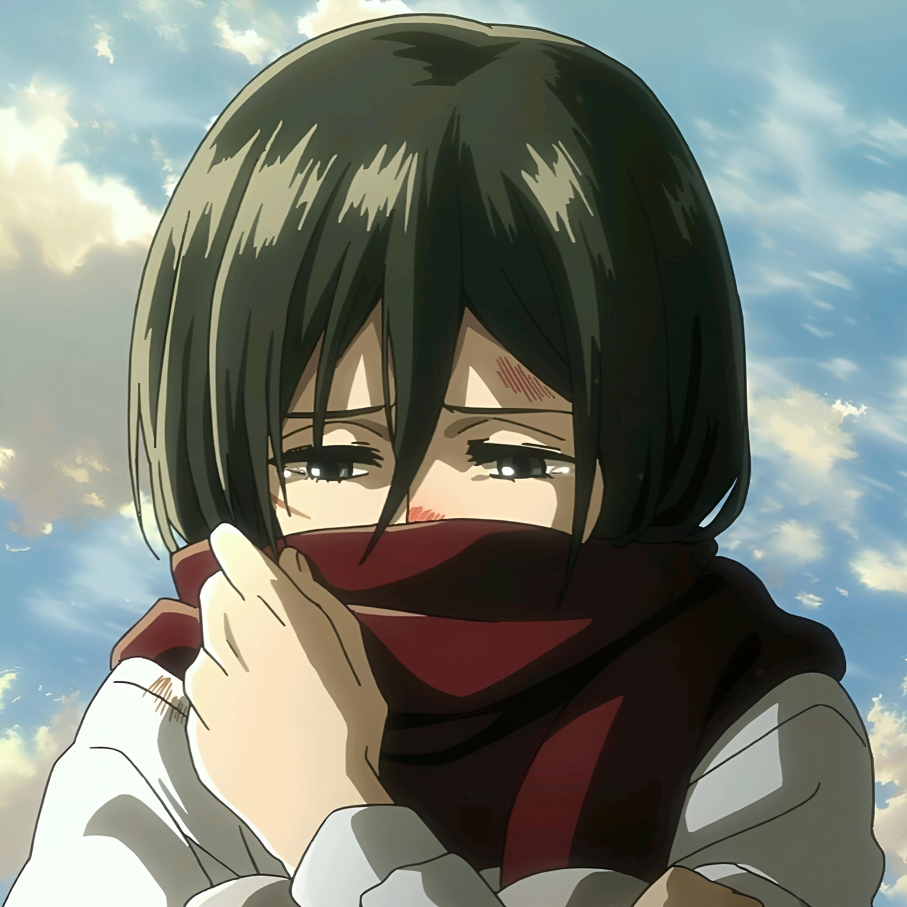 Микаса Аккерман яп- ミカサ・アッカーマン
Приемная сестра Эрена, главный женский персонаж аниме. Микаса — наполовину азиатка и последняя представительница своей расы. Прежде чем её приняли в семью Йегеров, мать и отец девочки погибли от рук работорговцев, а саму девочку похитили. Тем же вечером Эрен спас Микасу, и они вместе убили похитителей, решивших продать девочку после смерти родителей. Убийство родных родителей Микасы и мамы Эрена оставило неизгладимый след в её душе. В связи с этим инцидентом она очень заботится об Эрене, ходит за ним, как тень, приглядывает и следует за ним всегда, независимо от обстоятельств, не желая терять последнего члена её семьи. Никому не показывает своих эмоций. Заняла первое место среди кадетов-выпускников своей группы, сохраняет самообладание в любой ситуации, считается беспрецедентным гением в плане боевых навыков. Дорожит своим шарфом, который надел на неё Эрен в тот день, когда спас её от работорговцев. В дополнительных главах манги показано, что Микаса вышла замуж за мужчину (лицо которого скрыто) и родила двух детей. Она прожила прекрасную жизнь и умерла в глубокой старости. Названа автором в честь японского корабля.
𝕰𝖗𝖛𝖎𝖓 𝕾𝖒𝖎𝖙
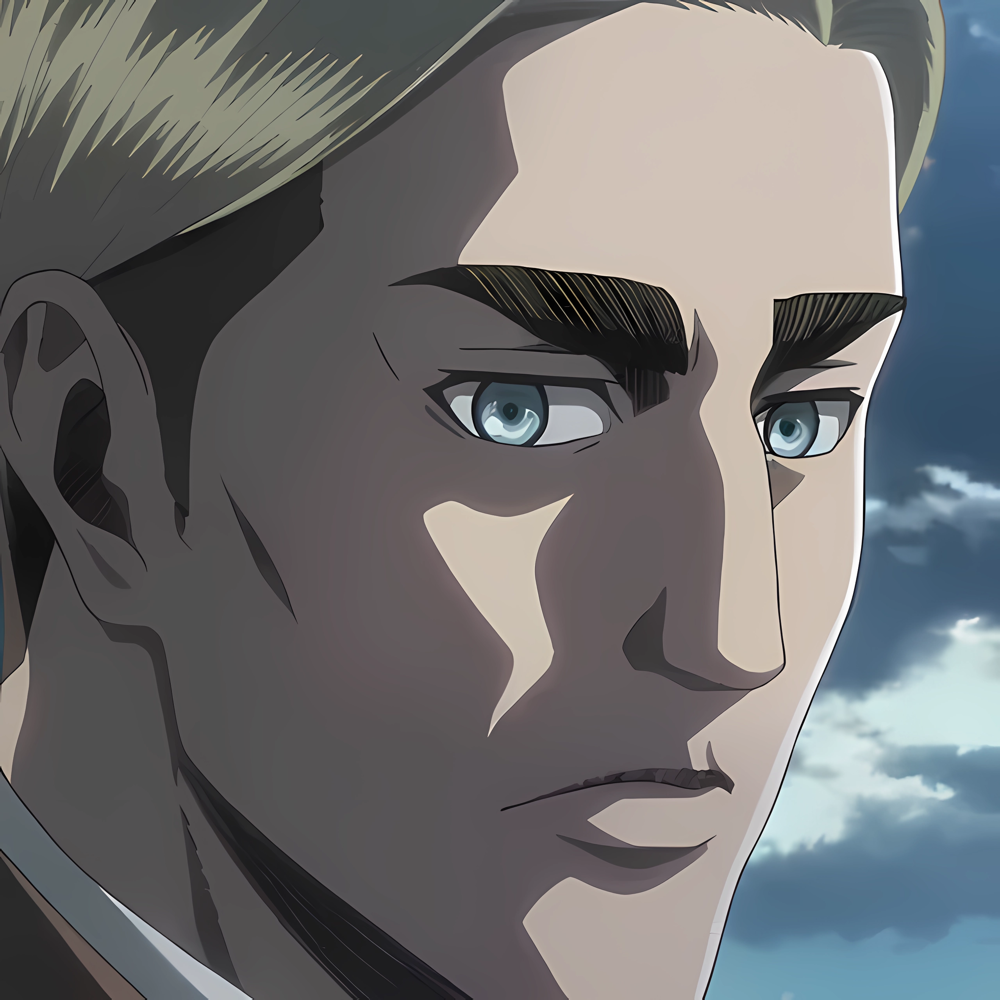 Эрвин Смит яп- エルヴィン・スミス
Также известен как командор Эрвин. Командир разведывательного отряда. Эрвин является глубокомыслящим и уважаемым человеком. Несмотря на заботу о собственных солдатах, способен без колебаний пожертвовать ими ради будущего человечества. В детстве по его вине отец Эрвина был убит военной полицией за то, что тот догадывался о лжи внутри стен. С тех пор у Эрвина появилась мечта - узнать о всех тайнах об этом мире и титанах. Поступает в разведкорпус. Когда Эрвин только стал командором разведывательного отряда, он разработал тактику дальнего обнаружения, благодаря которой разведчики минимизировали потери во время экспедиций. Вербует Эрена в разведотряд, выиграв в суде у военной полиции. Вместе с Ханджи Зоэ разработал план по поимке Женщины-титана, но тот проваливается. В Стохессе Эрвин создает план по задержанию Анни Леонхарт, за что позже отчитывается перед правительством, так как его операция стоила жизней сотен жителей. Во время погони за Бронированным титаном теряет правую руку, но это не помешало ему дальше сражаться и поднимать боевой дух солдат. После этого Эрвина вызывают на аудиенцию к королю и арестовывают за подозрение в организации убийства купца Ривза. В тайне планирует свержение правительства. Будучи на волоске от виселицы, переворот свершается, и Эрвин освобождается. Дальше он командует экспедицией по возвращению стены Мария. Оказавшись зажатым Звероподобным титаном, командор вдохновляет своих солдат отправиться на верную гибель, ради победы над Звероподобным. Эрвин возглавляет отряд самоубийц и получает смертельное ранение от прилетевшего валуна. Оказывается при смерти, но Флок дотаскивает командора и просит вколоть ему сыворотку, вместо обгоревшего Армина, аргументировав это тем, что только дьявол способен победить титанов. Поначалу Леви хотел так и сделать, но Эрвин в последний момент отдёрнул свою руку. Леви решает всё-таки спасти Армина, позволив другу «отдохнуть».
𝖅𝖍𝖆𝖓 𝕶𝖎𝖗𝖘𝖍𝖙𝖆𝖓
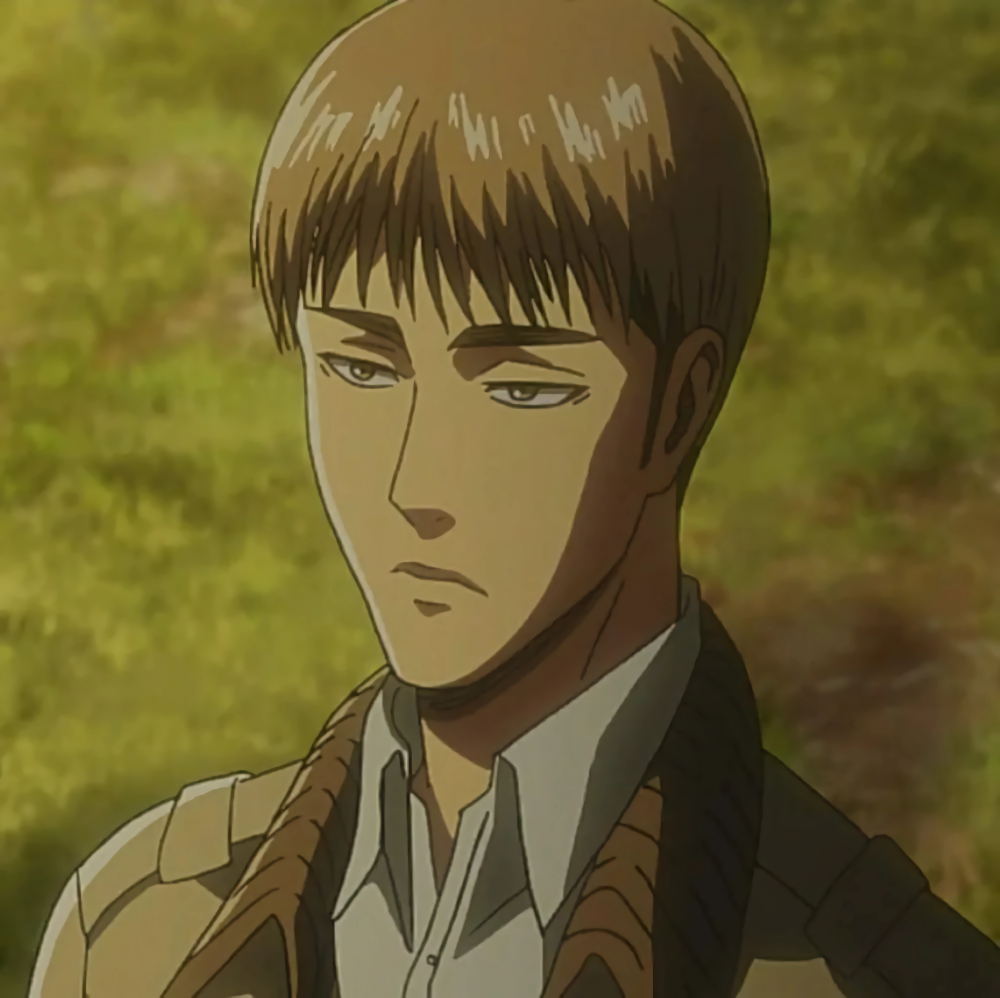 Жан Киршрштан яп- ジャン・キルシュタイン
Кадет 104-го корпуса, занявший шестое место среди выпускников. Всегда говорит, что думает, несмотря на то, что осознаёт негативные последствия, что и является причиной стычек с Эреном, помимо их сильного различия во взглядах на жизнь, однако парень считается честным человеком. Марко замечает понимание Жаном слабости сотоварищей и, в связи с этим, умение трезво оценивать ситуацию в нужный момент, что делает из него хорошего лидера, однако сам Жан этого не признаёт. Влюблен в Микасу, ревнует её к Эрену. Изначально целится в военную полицию ради собственной выгоды, чего и не скрывал. После второй атаки «колоссального титана» участвует в обороне Троста. Принимает решение вступить в разведывательный отряд. Дальше участвует в 57-й экспедиции, потом в операции в Стохессе, где становится двойником Эрена. После участвует в погоне за Бронированным титаном, где теряет сознание от падения с лошади и чудом выживает, благодаря Армину. Во время охоты военной полиции за разведчиками вновь изображает Эрена, а после участвует в его освобождении. Позже воюет против Бронированного титана. Через четыре года участвует в битве с Эреном Йегером. Обращен в неразумного титана в 138-й главе, но уже в 139-й был обращëн назад.
𝕱𝖑𝖔𝖐 𝕱𝖔𝖘𝖙𝖊𝖗
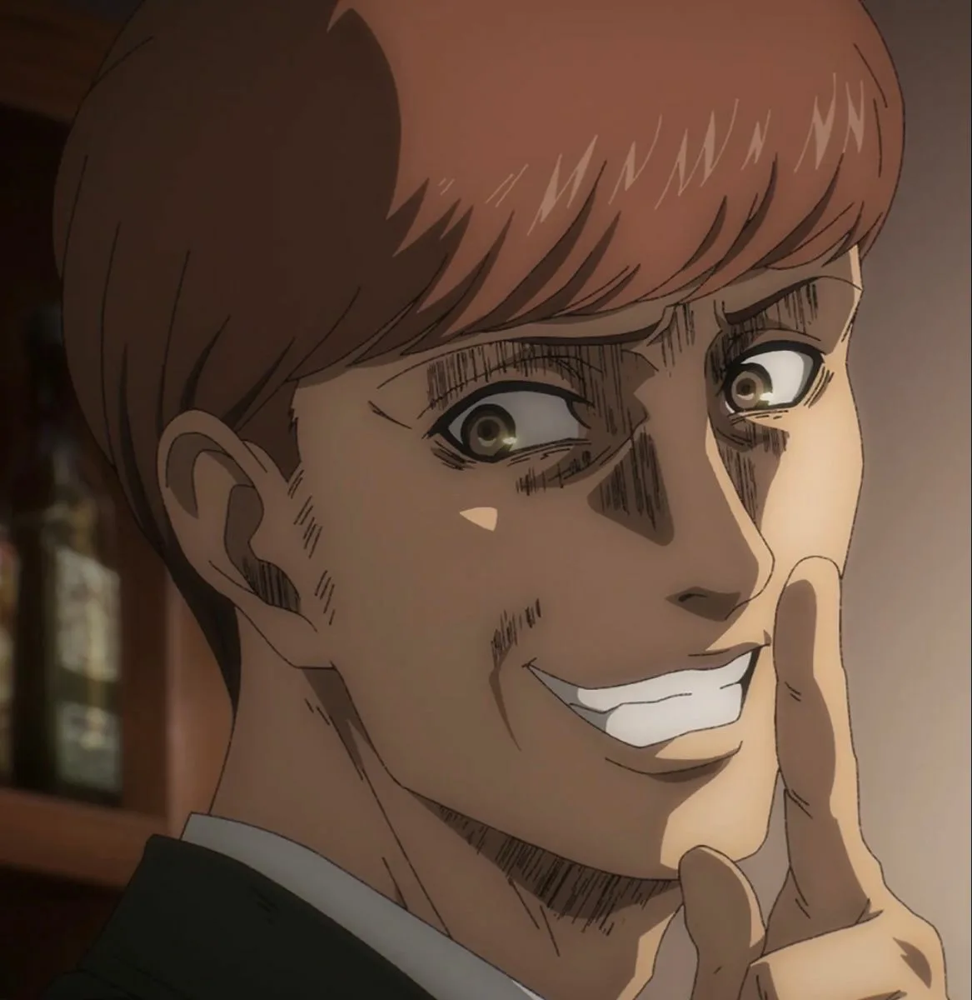 Флок Форстер яп- フロック・フォルスター
Молодой солдат разведывательного отряда. Единственный, кто выжил после каменного шквала Звероподобного титана. Считал, что правильным решением было бы вколоть сыворотку Эрвину, а не Армину. Спустя четыре года стал сторонником возрождения Эльдии, из-за чего перешёл на сторону Эрена и Зика, предав при этом разведотряд и своих товарищей с Парадиза. Правая рука Эрена и лидер повстанческой фракции "Йегеристов". Был убит Микасой.
𝕶𝖔𝖓𝖓𝖎 𝕾𝖕𝖗𝖎𝖓𝖌𝖊𝖗
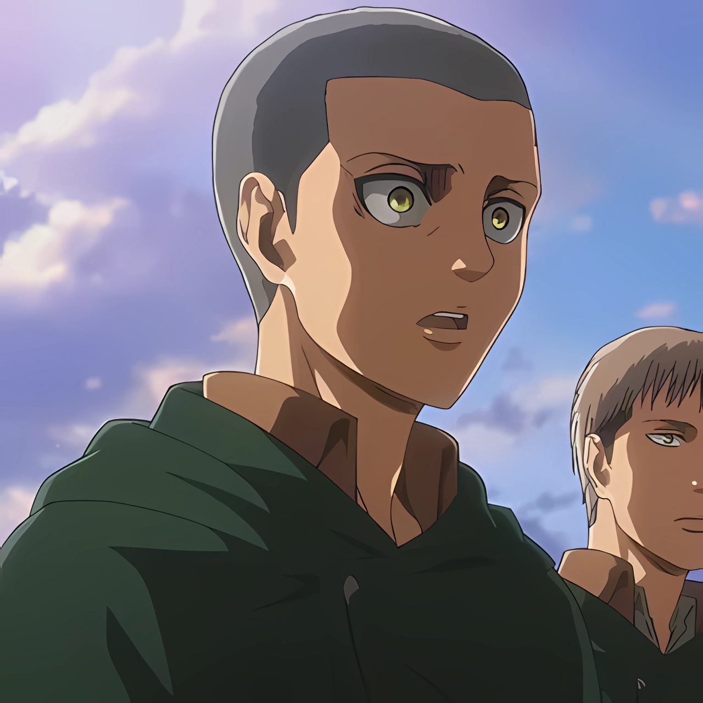 Конни Спрингер яп- コニー・スプリンガー
Кадет 104-го корпуса, занявший восьмое место среди выпускников. Является достаточно эмоциональным и действует стремительно, однако глуповат. В сложных ситуациях старается подбодрить товарищей. Деревни Саши и Конни располагаются в одном районе. После обучения вступает в разведывательный отряд. Конни было трудно принять решение о выборе направления, поэтому он очень нервничал, но всё же выбрал разведку, оставшись с остальными. Принимал участие в обороне Троста. Во время нападения «звероподобного титана» вся его деревня становится титанами. Дальше участвует во всех операциях разведкорпуса. Обращен в неразумного титана в 138-й главе, но уже в 139-й был обращен назад.
𝕾𝖆𝖘𝖍𝖆 𝕭𝖗𝖆𝖚𝖘
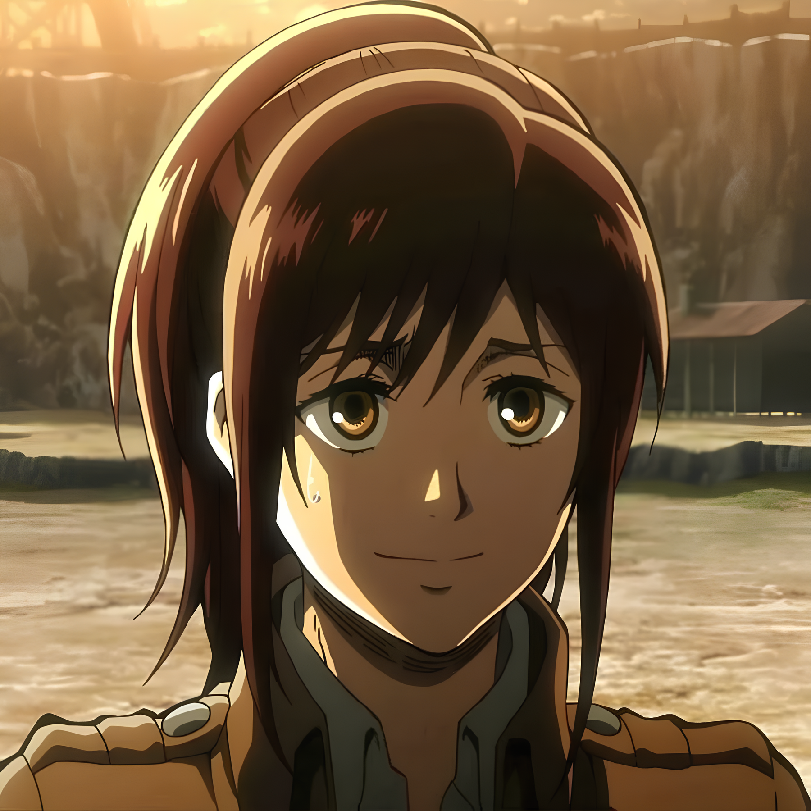 Саша Браус яп- サシャ・ブラウス
Кадет 104-го корпуса, занявшая девятое место среди выпускников. В манге о Саше было сказано как о «талантливой, но неспособной к групповой работе». Часто ведёт себя чересчур эксцентрично, бывает неуместно вежлива, крайне щедра и отзывчива. Потребляет много пищи, поскольку выросла в условиях дефицита дичи. Часто ворует еду из столовой или кладовок офицеров. Получила прозвище «Картошка» после небольшого инцидента: в первый день, при поступлении, ела картофель в строю, после чего была отправлена бегать в течение пяти часов и лишена обеда. Родом из горной охотничьей деревни Даупер (южный район стены Роза). Вступает в разведывательный отряд, участвует в 57-й экспедиции, позже разносит известия о проломе стены Роза, в это время спасая девочку от титана, что говорит о её заботе об окружающих, ведь раньше Саша была очень эгоистичной. Участвует в спасении Эрена от съедения отцом Хистории, а также в битве за Сигансину, где получает тяжелое ранение. Однако после битвы выздоравливает. Спустя четыре года, Саша вместе со всеми воюет с Марли, но при отходе на дирижабле получает пулю в живот из винтовки от Габи, которая тайком пробралась на судно. Саша погибает, её хоронят на Парадизе.
𝕸𝖆𝖗𝖐𝖔 𝕭𝖔𝖙𝖙
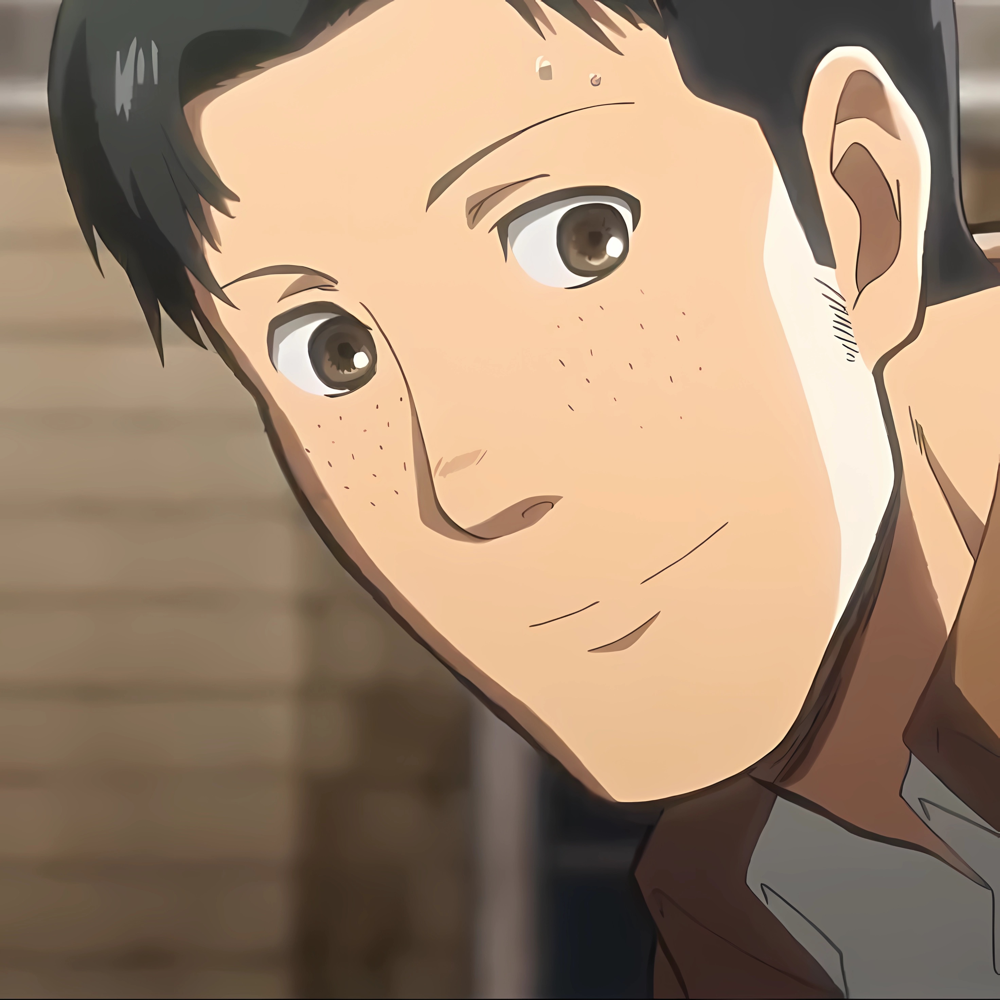 Марко Ботт яп- マルコ・ボット
Кадет 104-го корпуса, занявший седьмое место среди выпускников, позже становится лидером 19-го отряда во время битвы за стену Роза. Мечтает вступить в военную полицию, поскольку считает честью служить королю. Хорошо относится к Жану и является его лучшим другом. Случайно подслушал разговор Райнера и Бертольда о титанах, после чего был схвачен Райнером. По его приказу Энни сняла с Марко привод, после чего тот был брошен на съедение титанам во время обороны Троста. Энни подобрала привод Марко для использования в своих целях. Марко, несмотря на довольно скорую смерть в результате предательских действий, за короткий срок смог уничтожить множество титанов, вступая в бой даже с двумя противниками одновременно, что делало его одним из самых результативных бойцов человечества.
𝕽𝖆𝖞𝖓𝖊𝖗 𝕭𝖗𝖆𝖚𝖓
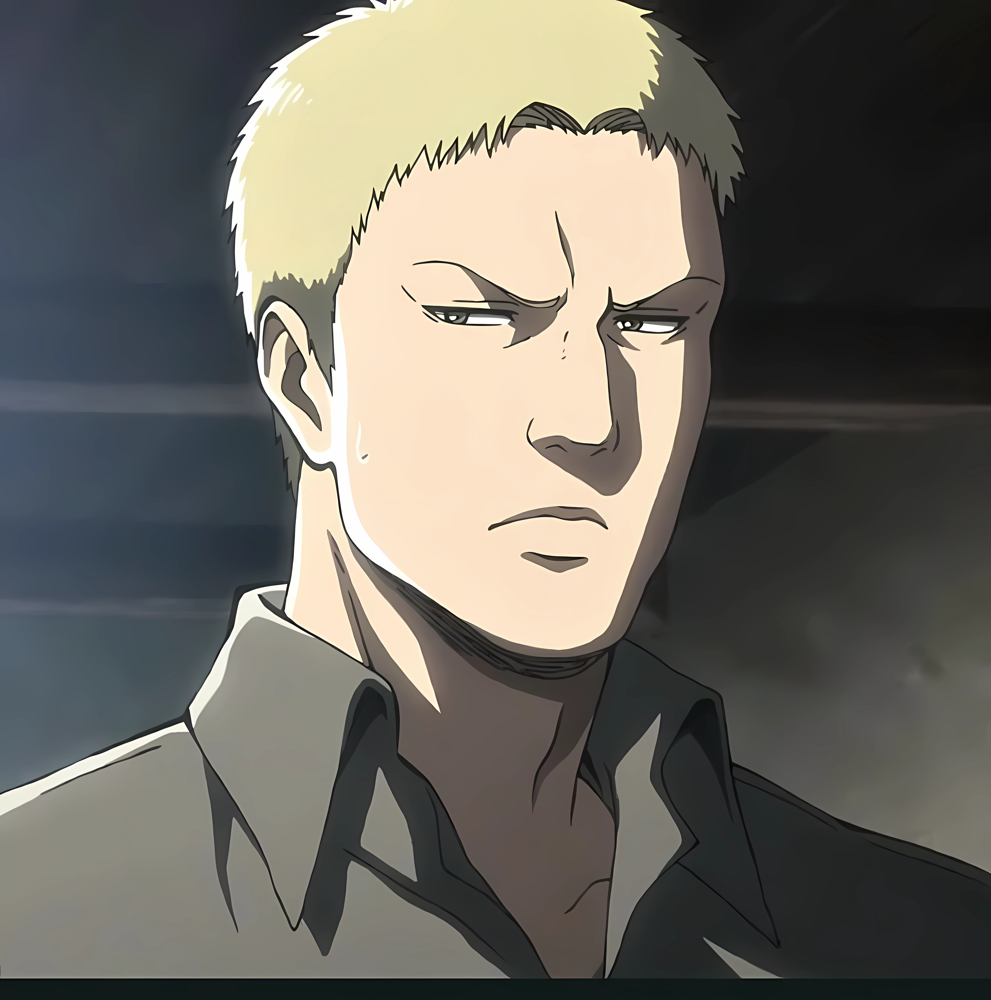 Райнер Браун яп-ライナー・ブラウン
Кадет 104-го корпуса, занявший второе место среди выпускников. После второго нападения Колоссального титана отправлен на линию фронта. Считается волевым человеком с твёрдым характером и отличной физической подготовкой, наиболее умело завоёвывает доверие своих товарищей, однако позже обнаруживаются серьёзные психические и эмоциональные проблемы, в связи с его действиями. Ввиду неспособности справиться с чувством вины, подавляет собственные воспоминания. Привязан к Бертольду и Хистории Рэйсс. Является Бронированным титаном. Был послан работать среди людей и получил задание найти титана Прародителя, а затем похитить Эрена Йегера. Райнер родом из государства за стеной под названием Марлия. Вместе с Бертольтом проламывает стену Мария. Внутри стен долго играет роль «солдата», но после битвы в Утгарде не выдерживает напряжения и решает «снять маску». Превращается в Бронированного титана и чуть не проигрывает Эрену в битве. Вместе с Бертольтом похищает его и пытается оторваться от разведкорпуса, однако ничего не выходит и Райнер отступает к Шиганшине. Там вместе со Звероподобным, Повозкой и Колоссальным они устраивают засаду для разведчиков. Однако Райнер проигрывает Эрену и чудом спасается от взрыва, перенеся своё сознание в нервную систему гиганта. Его спасают Зик и Пик, вместе они возвращаются в Марлию. Спустя четыре года Райнер участвует в войне с вражеской страной. После 9 лет миссии Райнер возвращается в Либерио к своей семье. Двоюродный брат Габи Браун. Райнер сын марлийца и элдийки (браки между ними строго запрещены). В результате он решил присоединиться к программе Воинов в надежде стать одним из Девяти Титанов, чтобы они с матерью стали почетными марлианцами и наконец-то смогли воссоединиться с отцом. Несмотря на то, что он был выбран кандидатом в воины, отец его не принял. После смерти Эрена Йегера в 854 году, лишился силы Бронированного титана. Исаяма заявил, что он разработал мускулистую внешность Райнера и «выдающуюся личность», чтобы у читателей сложилось впечатление, что Браун — человек, «предназначенный для великих дел».
𝕭𝖊𝖗𝖙𝖔𝖑𝖉 𝕳𝖚𝖛𝖊𝖗
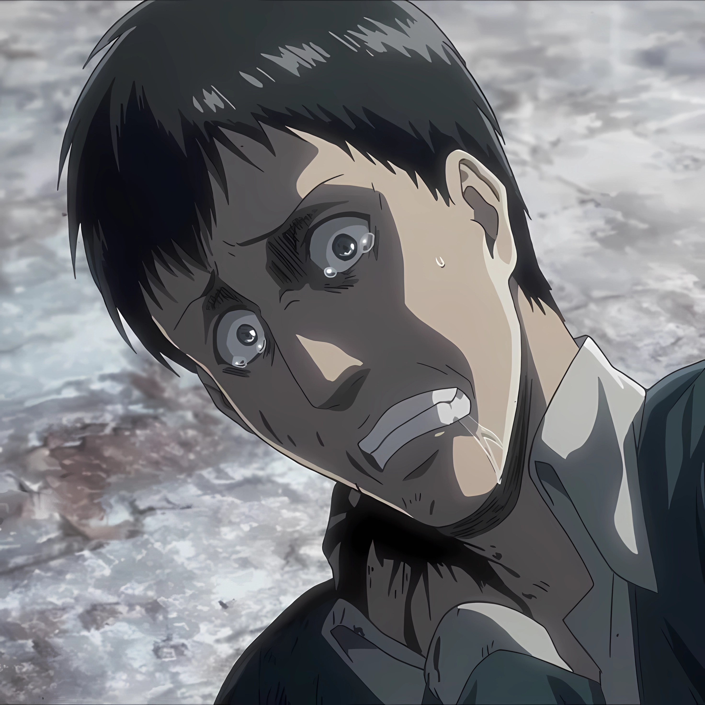 Бертольд Хувер яп- ベルトルト・フーバー
Кадет 104-го корпуса, занявший третье место среди выпускников. Молчаливый и необщительный. Считается способным, однако безынициативен. Практически не отходит от друга детства Райнера Брауна. Испытывает чувства к Анни Леонхарт. После обучения вступает в разведывательный отряд. Всегда спит в очень причудливых позах, из-за чего сокурсники иногда предсказывали по нему погоду. Один из главных антагонистов. Выясняется, что он является Колоссальным титаном. В 845 году его вместе с Райнером, Анни и Марселем отправили на остров Парадиз, чтобы заполучить силу титана Основателя для Марлии. Бертольд пробил внешние ворота Шиганшины в попытке выманить обладателя силы титана Основателя, однако последний так и не появился. После этого воины начали сбор информации о королевской семье внутри стен, а также вступили в Кадетский корпус, чтобы изучить врага изнутри. Спустя пять лет после падения Стены Мария Бертольт превращается в Колоссального титана за южными воротами Троста, чтобы вновь проделать разлом во вратах. Спустя месяц после инцидента у района Трост Браун и Хувер замечают Звероподобного титана. Поняв, что их главнокомандующий прибыл на остров, они решают действовать радикально, они трансформируются в титанов на глазах у бывших товарищей и силой забирают Эрена и Имир с собой. После неудачной миссии по захвату Эрена они бегут к руинам Шиганшины, где встречаются с Зиком. В битве за Шиганшину принимает облик Колоссального титана, однако в конечном итоге терпит поражение. В 850-м году съеден Армином, обратившимся в неразумного титана. Его отец умер так и не дождавшись сына с миссии. В путях Эрен обрёл воспоминания Бертольда, так же в Путях Армин видит Бертольда и говорит ему, что он украл его жизнь. Армин просит его одолжить свою силу. Эрен воссоздал всех Колоссальных титанов в том числе и Бертольда, он смог взять под контроль своего титана и спас Анни от роя Титанов. Он поднимает Армина с некоторыми другими Титанами и держит его, чтобы он уничтожил Титана Эрена.
𝕭𝖊𝖗𝖙𝖔𝖑𝖉 𝕳𝖚𝖛𝖊𝖗
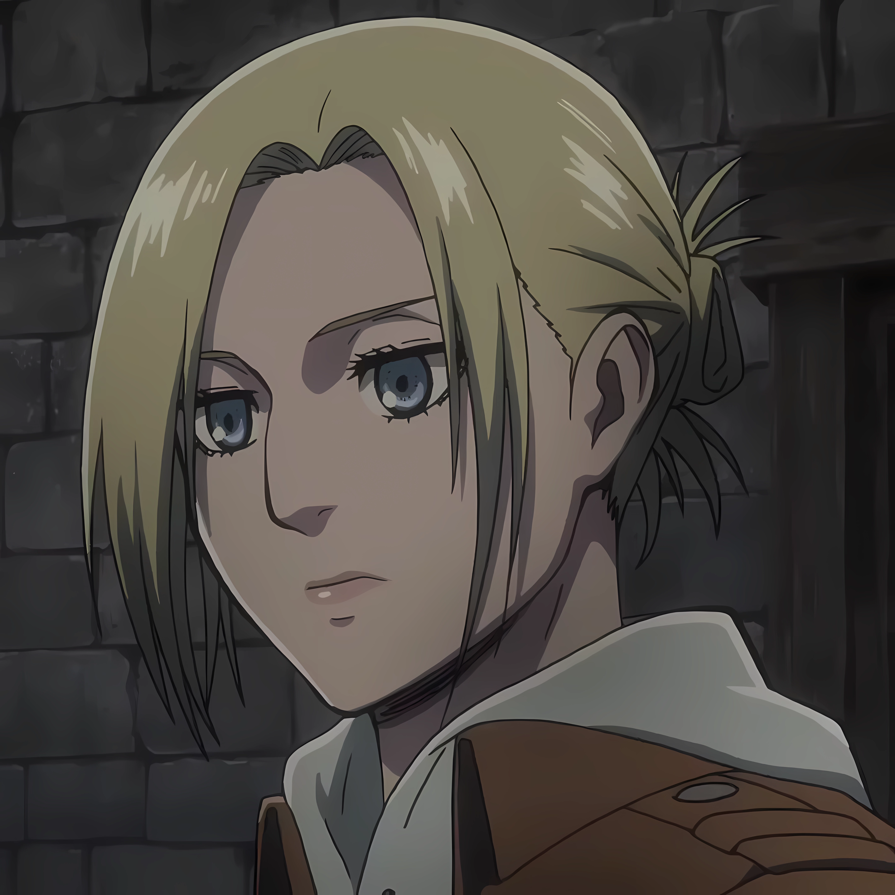
Анни Леонхарт яп- アニ・レオンハート
Кадет 104-го корпуса, занявшая четвёртое место среди выпускников. Вступает в военную полицию. Считается замкнутой, апатичной, не вкладывает никаких усилий, нейтрально относится к тренировкам и дисциплинам. Вместо этого сосредотачивается только на том, чтобы обеспечить себе службу в военной полиции для лёгкой жизни. Является Женской особью титана. Получила задание похитить Эрена, но провалилась и после того, как люди узнали о её сущности и окружили, заключила себя в большой кристалл, чтобы другие не сумели раздобыть информацию о титанах. Всегда сожалела и просила прощение у своих жертв. В 124-й главе манги кристалл Анни был разрушен, так как Эрен уничтожил стены и вместе с ними все затвердевания титанической природы. В 125-й главе встретила Хитч, которая решила не выдавать её и помочь бежать из города. Единственная ее мечта вернутся к отцу. В этой же главе выясняется, что Анни — внебрачная дочь гражданки Марли и её любовника-элдийца, а мистер Леонхарт — её приемный отец, человек со схожей судьбой. После смерти Эрена Йегера в 854 году, лишилась силы титана.
𝕴𝖒𝖎𝖗
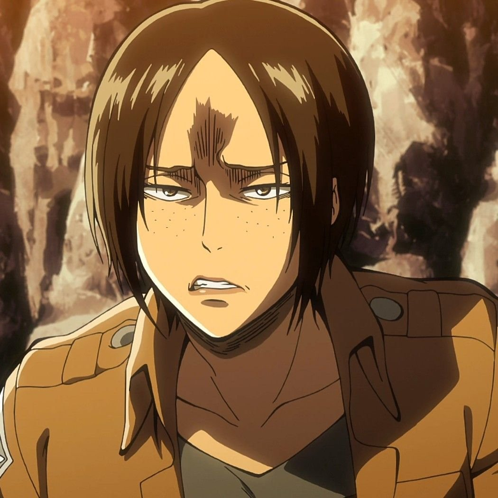 Имир яп- ユミル
Кадет 104-го корпуса. Является сложным персонажем, поначалу кажется эгоистичной, циничной и властной, нетерпимой к инакомыслию, однако также может быть весьма доброй, особенно к Кристе. Испытывает к ней любовные чувства. Следуя за ней, вступает в разведывательный отряд. Принимала участие в обороне Троста. Была сиротой, которую на улице Марлии подобрал священник и заставил играть роль прародительницы Имир. Именно он и дал ей имя. Спустя много лет их секту рассекретили, и всех её участников изгнали, обратив в титанов. Около 60-ти лет Имир прожила в теле неразумного титана. Однажды она столкнулась с Райнером, Бертольдом, Анни и Марселем направляющимися к стене Мария, с целью пробраться за неё. Так она съела Марселя и получила силу шифтера. Через некоторое время Имир вернула себе человеческий облик и сознание. Следующие два года она провела в стене Сина, наблюдая за человечеством, она выжила, выпрашивая деньги и еду. Там она подслушала разговор членов культа Стен и узнала о Хистории Рейсс. Интерес Имир к Хистории привёл её к зачислению в военные, Имир надеялась за счет своей помощи Хистории расплатиться за прошлые преступления. В форме титана её голова непропорционально большая, однако она считается очень маленькой, но это компенсирует её большая скорость. Позже стало известно, что Имир была скормлена Порко Гальярду.
К𝕶𝖗𝖎𝖘𝖙𝖆 𝕷𝖊𝖓𝖈
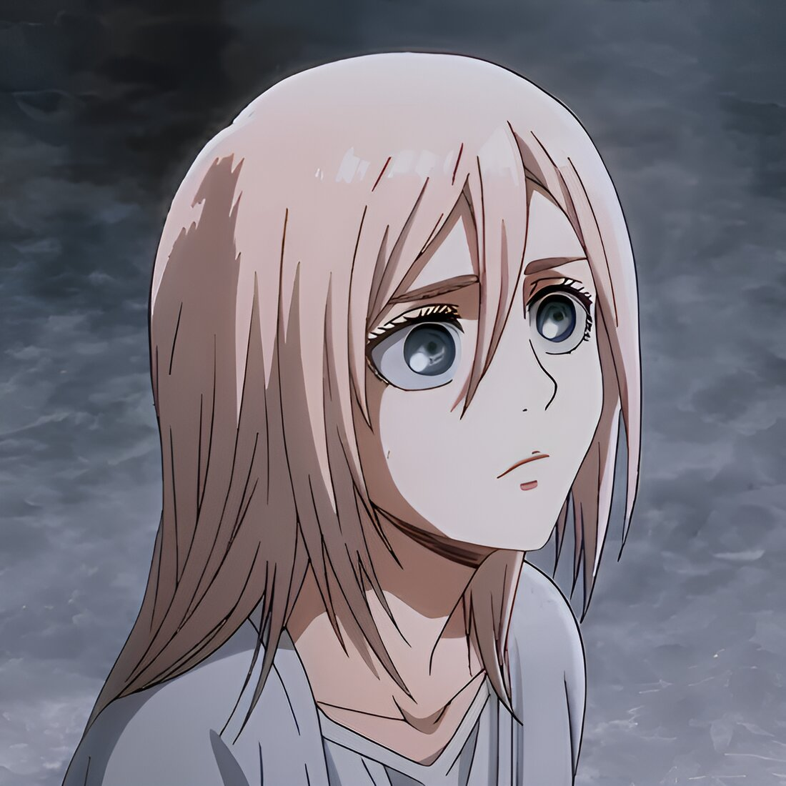 Криста Ленц яп- クリスタ・レンズ
Кадет 104-го корпуса, занявшая десятое место среди выпускников. Состоит в близких отношениях с Имир. Имеет добрый характер, ставит приоритеты других выше своих, любит помогать окружающим. В боевых действиях в обороне Троста замечена не была. После обучения вступает в разведывательный отряд. Родом из знатной семьи, связанной с религиозной сектой стены, но, как незаконнорожденный ребёнок, была изгнана. В 55-й главе Санес сознаётся в том, что Рэйсс — это настоящий королевский род. После смерти Рода Рейсса становится королевой Элдии.
Настоящее имя — Хистория Рэйсс яп- ヒストリア・レイス, ранее она скрывала своё реальное имя из-за изгнания и хотела умереть так, чтобы её запомнили. Как представитель знатного рода Рэйсс имеет право распространять информацию о гигантах, но таковой не обладает. В детстве была не нужна никому из своих родственников, даже собственной матери. Единственная, кто поддерживала с ней отношения, была Фрида Рэйсс, которая научила её читать и писать, но постоянно стирала память о себе.
Под влиянием своего отца Рода Рэйсса почти ввела себе сыворотку для превращения в титана и не съела Эрена, чтобы вернуть себе законную силу. Проявила свой настоящий характер, «сбросив» наигранную личину. Впоследствии убивает своего отца, ставшим титаном, на глазах своего народа и становится новой королевой внутри стен. Спустя некоторое время заключает союзы с Восточной империей, а также соглашается вырастить потомство для передачи детям силы Звероподобного. В конце истории у нее рождается дочь.
𝕯𝖔𝖕 𝕻𝖎𝖐𝖘𝖎𝖘
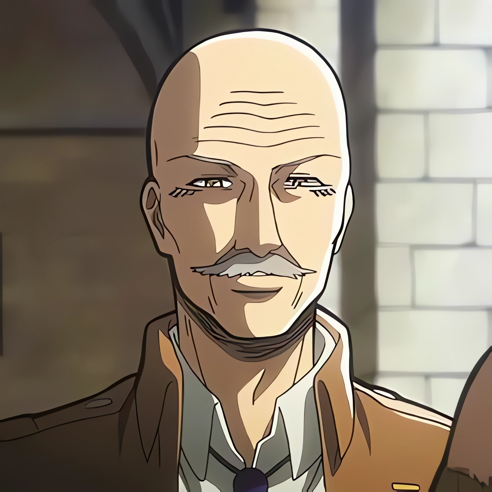 Дот Пиксис яп- ドット・ピクシス
Высокопоставленный офицер гарнизона, отвечающий за городскую защиту. Глава южного округа (включая Трост). В вопросах защиты имеет полную власть. Во время второй битвы за Шиганшину был обращён в титана и убит Армином.
𝖅𝖎𝖐 𝖄𝖊𝖌𝖊𝖗
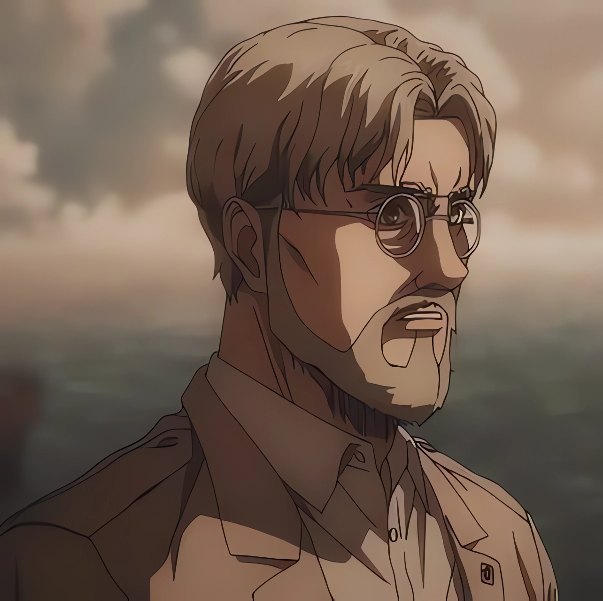 Зик Йегер яп- ジーク・イェーガ
Единокровный брат Эрена, сын Гриши Йегера и Дины Фриц, обладатель силы Звероподобного титана. Наследник королевского рода, из-за чего может использовать «крик титана». Его титан покрыт густой шерстью и способен разговаривать. Будучи претендентом на силу титана в детстве, он сдаёт своих родителей, которые являлись организаторами группы по возрождению Элдии. Марлийское командование считает это проявлением верности Зика, но на самом деле «предатель» всё ещё хотел восстановления Элдии, но решил добиться этого путём получения доверия от Марли. В 850-м году Зик отправляется на Парадиз по приказу Марли, где он впервые представляется главным героям. Зик пробирается в деревню Конни, где превращает её жителей в титанов, создав имитацию падения стены Роза. Позже он приводит в ужас Майка своей способностью разговаривать и командовать титанами. Там Зик узнает об УПМ и поражается этой технологии, а беднягу Майка приказывает съесть. Через несколько часов он командует титанами при нападении на замок Утгард и кидает камень в башню, убив двух разведчиков. После этого Зик уходит в Сигансину. Через некоторое время он встречается с Райнером и Бертольдом, и вместе они готовят засаду в городе. Когда разведчики попадают в неё, Зик окружает их со спины и начинает швыряться камнями в деревню возле Сигансины. Разведкорпус скачет к нему на лошадях, дабы отвлечь его внимание, но Зик стирает солдат с лица Земли, также убив Марло и Эрвина. Но Звероподобный титан не замечает Леви, который убил всех титанов-охранников. Зик проигрывает бой с ним и оказывается на грани гибели. Но его спасает Пик в форме Титана-повозки. Зик Йегер чудом спасается с Райнером, оставив Бертольда, и возвращается в Марли. Спустя четыре года он получает письмо от Эрена и рассказывает ему о своем плане. Тот соглашается и во время битвы разведчиков и солдат Марли инсценирует свою гибель, а сам отправляется с Эреном и разведкорпусом на Парадиз. Там он якобы выказывает готовность принять свою гибель, будучи съеденным Хисторией или ее наследником. На самом деле планирует с помощью Эрена привести в действие свой собственный план «эвтаназии», согласно которому всех элдийцев ждёт бесплодие. Был поручен Леви, которого подорвал на громовом копье и подорвался сам. Выжил. В путях встречается с Эреном, который обманывает его и не намерен лишать элдийцев способности иметь детей. Путешествуя по воспоминаниям Гриши, Зик встречает отца, и тот просит его остановить Эрена. План Зика терпит крах, Имир Фриц отдает свои силы Эрену, и тот выпускает колоссальных титанов из стен, чтобы уничтожить враждебный острову мир. Погибает от рук Леви Аккермана во время битвы с Эреном Йегером (тем самым Леви сдерживает обещание, данное Эрвину Смиту).
𝕸𝖆𝖗𝖘𝖊𝖑 𝕲𝖆𝖑𝖞𝖆𝖗𝖉
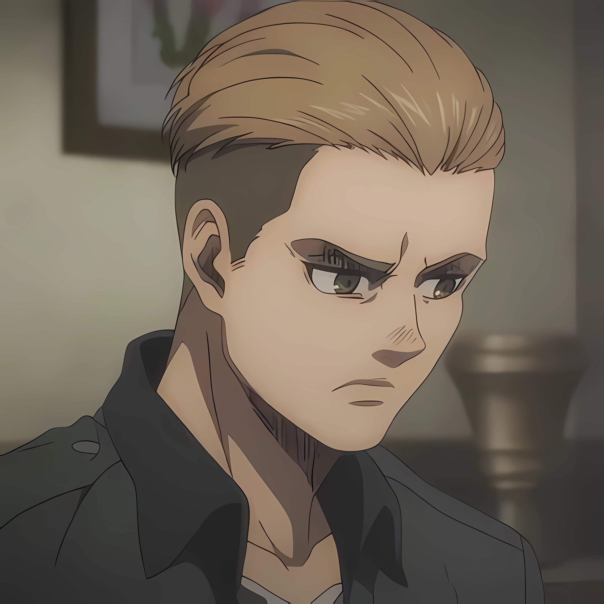 Марсель Гальярд яп- マルセル・ガリアード
Друг детства Райнера, Бертольта и Анни. Старший брат Порко. В 845 году его вместе с Райнером, Анни и Бертольтом отправили на остров Парадиз, чтобы заполучить силу титана Основателя для Марлии. Обладал силой Титана-Челюсти. Спасая Райнера был съеден Имир в облике неразумного титана.
Сэйю: Масамити Китада
𝕻𝖎𝖐 𝕱𝖎𝖓𝖌𝖊𝖗
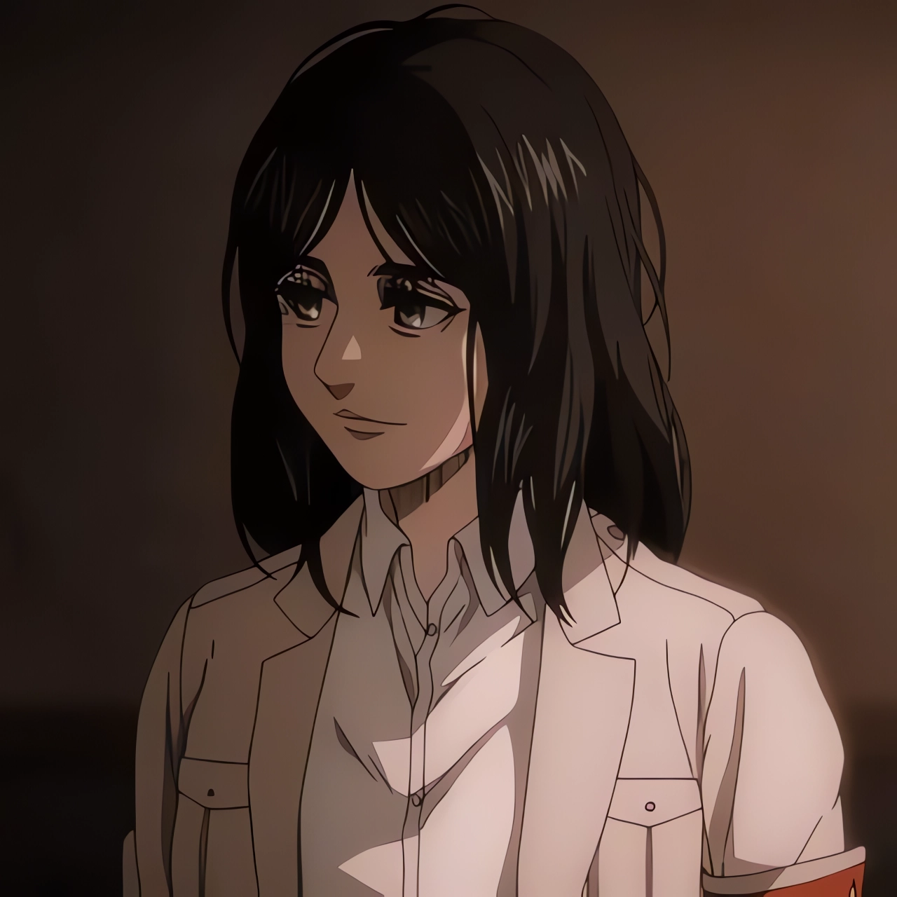 Пик Фингер яп- ピーク・フィンガー
Элдийская военная, работающая на правительство Марли. Обладает силой Титана-Повозки. В битве за стену Мария спасла Зика от смерти. Её титан обладает высокой выносливостью и позволяет ей находиться в его форме длительное количество времени, а также обращаться практически бесконечное количество раз, по её словам, пока её не убьют. После смерти Эрена Йегера в 854 году, лишилась силы титана.
𝕱𝖆𝖑𝖐𝖔 𝕲𝖗𝖆𝖞𝖘
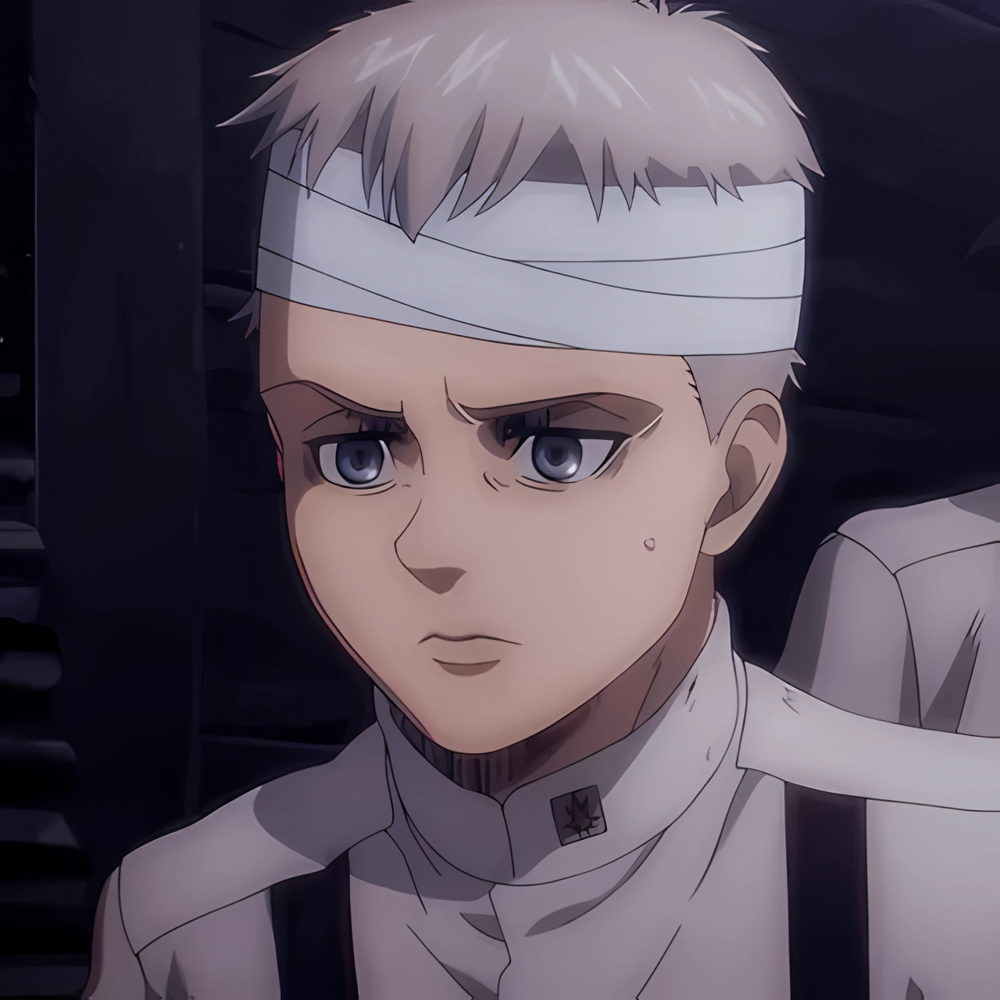Фалько Грайс яп- ファルコ・グライス
Кандидат в Воины Марли. Младший брат Кольта. Один из кандидатов на получение силы Бронированного титана. По вине Николо в его организм попало вино со спинномозговой жидкостью Зика, после его крика превратился в неразумного титана и убил своего брата. В конце истории получает силу Титана-Челюсти, съедая Порко Гальярда. Его титан — единственный, который умеет летать. После смерти Эрена Йегера в 854 году, лишился силы титана.
𝕲𝖆𝖇𝖎 𝕭𝖗𝖆𝖚𝖈
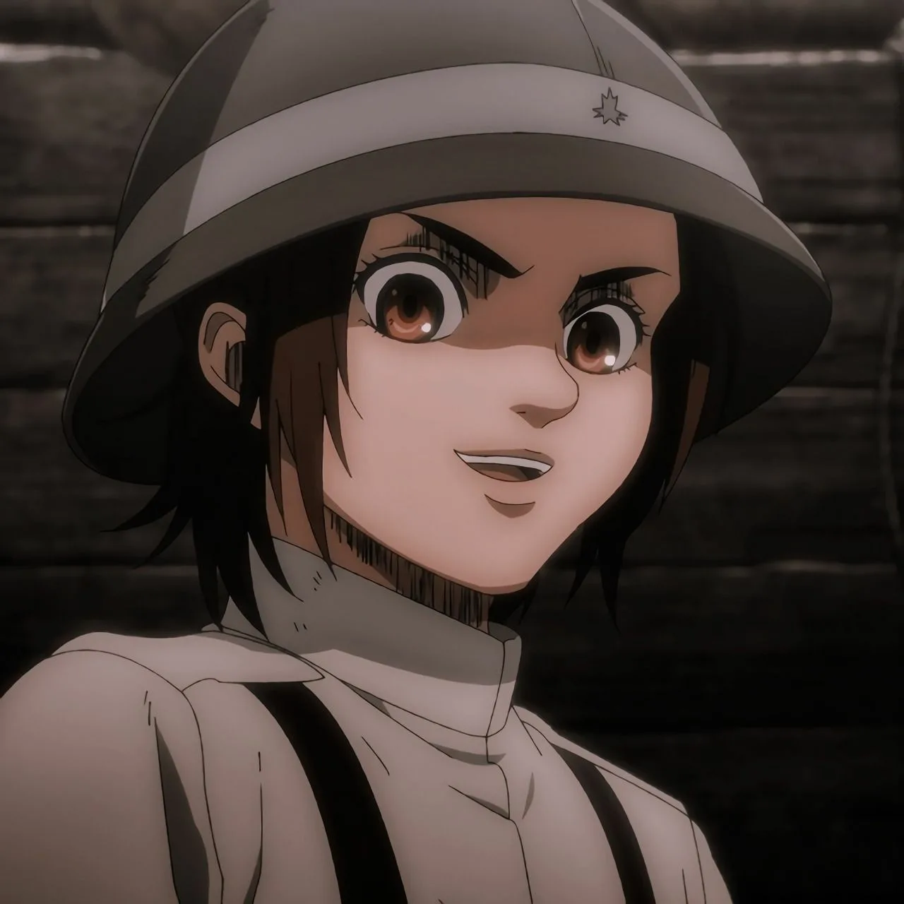Габи Брaуc яп- ガビ・ブラウン
Кандидат в Воины Марли. Очень сильная и решительная, готовая рисковать своей жизнью. Двоюродная сестра Райнера. Одна из кандидатов на получение силы Бронированного титана. Убийца Саши Браус. Вся ее семья, а также и она сама превращаются в неразумных титанов в 138-й главе, но в следующей главе они вновь обретают человеческий облик. Габи воссоединяется со своими родителями, Райнером и Фалько. В 857-м году после битвы у крепости Сальта, Габи и Фалько стали опекунами Леви, который остался калекой после битвы.
𝕲𝖗𝖎𝖘𝖍𝖆 𝖄𝖊𝖌𝖊𝖗
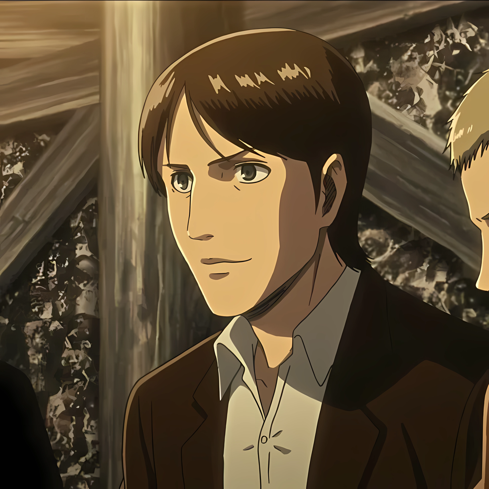Гриша Йегер яп- グリシャ・イェーガ
Отец Эрена и Зика. Родился в Марлийском городе, Либерио. В детстве повёл свою сестру Фэй смотреть на дирижабль, после чего она была растерзана собаками и убита офицером Марлии. В 18 лет юноша наследует клинику своего отца, и при осмотре г-на Грайса замечает на его плече крест. При последующих расспросах Гриша узнает, что это — знак «патриота» — отличительный знак Элдийских революционеров. Грайс вербует молодого Йегера в организацию «Возрождение Элдии». Узнав правду о гибели сестры, Гриша поклялся «Показать миру, кто есть дьявол на самом деле» и присоединился к мятежникам. Его первой женой стала Дина Фриц, у них родился сын Зик, которого они отправили стать солдатом Марлии и потом возродить Элдию. Однако Зик не разделял их методы, посчитав организацию Гриши кучкой идиотов и решил сдать родителей, дабы получить доверие Марлии. Всех его членов превращают в неразумных титанов, а также его жену Дину. На стене Парадиза Гриша знакомится с Филином (Эреном Крюгером) — анонимным куратором его бывшей организации, он узнаёт о Координате и получает силу Атакующего титана. Эрен Крюгер дает миссию проникнуть за стены и вернуть титана Прародителя. После он приходит к стене Мария, где Гришу находит Шайдис во время вылазки разведотряда. Гриша начал строить новую жизнь в Шиганшине. Он встретил Карлу, будущую мать Эрена, которая стала его второй женой. После падения стены Мария Гриша убил Фриду Рейс и почти всю королевскую семью и завладел силой Титана-Прародителя. Сделал Эрена титаном, а тот съел самого Гришу, тем самым получив силу Атакующего титана и Титана-прародителя вместе с Координатой.
 Армин Арлерт яп- アルミン･アルレルト
Хотя его стратегическая интуиция неоднократно спасала друзей и команду, он думает, что совершенно некомпетентен и укоряет себя за то, что полагается на других. По солдатским стандартам Армин не обладает высокими физическими способностями, но силен в тактике боя. В 83-й главе находился при смерти, так как пожертвовал собой в битве с Колоссом. В 84-й главе стал титаном благодаря сыворотке, которую ему ввёл капитан Леви. Позже съел Бертольда и вернулся в человеческое обличие. После смерти Ханджи становится 15-м командиром разведывательного отряда. Взорвал титана-прародителя Эрена Йегера в 137-й главе манги. После смерти Эрена в 854 году, лишился силы Колоссального-титана и объявляет себя убийцей Эрена Йегера. Армин и другие выжившие назначаются дипломатами для мирного переговора между внешним миром и островом Парадиз.
Армин Арлерт яп- アルミン･アルレルト
Хотя его стратегическая интуиция неоднократно спасала друзей и команду, он думает, что совершенно некомпетентен и укоряет себя за то, что полагается на других. По солдатским стандартам Армин не обладает высокими физическими способностями, но силен в тактике боя. В 83-й главе находился при смерти, так как пожертвовал собой в битве с Колоссом. В 84-й главе стал титаном благодаря сыворотке, которую ему ввёл капитан Леви. Позже съел Бертольда и вернулся в человеческое обличие. После смерти Ханджи становится 15-м командиром разведывательного отряда. Взорвал титана-прародителя Эрена Йегера в 137-й главе манги. После смерти Эрена в 854 году, лишился силы Колоссального-титана и объявляет себя убийцей Эрена Йегера. Армин и другие выжившие назначаются дипломатами для мирного переговора между внешним миром и островом Парадиз. Капитан разведывательного отряда, а также командир отряда специального назначения. Известен как «чистоплюй», уважает дисциплину, что делает его неприступным человеком, однако ценит человеческую жизнь, поскольку без отвращения пожимает окровавленную руку погибающего товарища, чтобы успокоить того в последние минуты жизни. После обороны Троста берёт на себя ответственность за Эрена, поскольку, по его словам, он единственный, кто сможет остановить его, если тот снова потеряет контроль. В конце манги остается жить в Марлии. Из-за полученных травм он навсегда прикован к инвалидному креслу, за ним ухаживают Габи и Фалько.
Капитан разведывательного отряда, а также командир отряда специального назначения. Известен как «чистоплюй», уважает дисциплину, что делает его неприступным человеком, однако ценит человеческую жизнь, поскольку без отвращения пожимает окровавленную руку погибающего товарища, чтобы успокоить того в последние минуты жизни. После обороны Троста берёт на себя ответственность за Эрена, поскольку, по его словам, он единственный, кто сможет остановить его, если тот снова потеряет контроль. В конце манги остается жить в Марлии. Из-за полученных травм он навсегда прикован к инвалидному креслу, за ним ухаживают Габи и Фалько. Ханджи Зоэ яп- ハンジ ・ゾエ
Майор разведывательного отряда. Занимается исследованием титанов, в связи с этим заинтересована в Эрене Йегере, способном принимать облик титана. Весьма гиперактивна, особенно когда дело касается знаний. Окунаясь в те или иные проекты, не задумывается о собственной безопасности, фокусируясь на документации и наблюдении. Сумела поймать нескольких титанов и провести над ними эксперименты, узнав многое об их биологии. О прошлом ничего неизвестно. Во время битвы за стену Мария потеряла левый глаз из-за взрыва от превращения Колоссального титана. После смерти Эрвина становится командиром разведывательного отряда. В 132-й главе сгорает заживо во время битвы с титанами, отвлекая на себя «Дрожь Земли».
Ханджи Зоэ яп- ハンジ ・ゾエ
Майор разведывательного отряда. Занимается исследованием титанов, в связи с этим заинтересована в Эрене Йегере, способном принимать облик титана. Весьма гиперактивна, особенно когда дело касается знаний. Окунаясь в те или иные проекты, не задумывается о собственной безопасности, фокусируясь на документации и наблюдении. Сумела поймать нескольких титанов и провести над ними эксперименты, узнав многое об их биологии. О прошлом ничего неизвестно. Во время битвы за стену Мария потеряла левый глаз из-за взрыва от превращения Колоссального титана. После смерти Эрвина становится командиром разведывательного отряда. В 132-й главе сгорает заживо во время битвы с титанами, отвлекая на себя «Дрожь Земли».